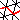

This editor allows creating and editing paths on triangular surfaces. Surface paths can currently be used only to measure distances on surfaces. To do so, right-click the surface object and select CreateSurfacePath from the ->Measure sub-menu. This creates a new SurfacePathSet and automatically opens the Surface Path Editor. Note that the following operations can only be applied, if the editor is selected in the Pool. In this way, you may interact with the surface in the usual manner when deselecting the editor.
The basic operations are:
Once a SurfacePathSet with one or more surface paths has been created their length can be queried by selecting a path and read its length from port Info. If multiple paths are to be measured at once the SurfacePathSet can be converted to a SpatialGraph object using Compute->LineSetToSpatialGraph and then analyzed using a SpatialGraphStatistics module.
Select a strategy to connect two points. Several different connectors exist. Choose one from the list below.
Close: Connects the start and end node of the active
path. As there is no last node, nodes cannot be appended to a
closed path.
Open: If the selected path is closed it is either
opened on the selected node or, if no node is selected, it is
opened at the node that was the last node before the path was
closed. If the selected path is already open and a node in this
path is selected, the path is split in two at this node.
Reverse: Reverses the active path. After reversing a path,
new nodes will be appended at the beginning and not at the
end of the reversed path.
Merge: Merge tries to connect endpoints of selected paths
and make them one path.
Entangle: Computes a node for each point of intersection of
line segments in the path set. If two nodes of the paths are
similar or equal in coordinate and type, they are replaced by a
single node. Entangled nodes can be moved like normal nodes, but
when moving them, all paths that belong to it are changed as well.
Untangle: Opposite to Entangle. If a node occurs in more
than one path it is duplicated once for each path.
Split at Intersections: If two paths not only intersect in
one point, but in a line segment, fix removes the overlapping part
of one of the paths and splits them into two at these points. In
the resulting path set, all paths only intersect in points.
Import Surface Contours: Creates paths along the boundary of
surface patches.
Patchify: Decomposes surface into several patches if surface
paths completely surround regions on the surface. If the path
nodes do not lie on vertices only, this operation cannot be
applied directly. Using the Snap to edges button, the user
can convert the path into a vertex path for which patchification
can be applied.
Smooth path:
This option smooths a path, whereby the end nodes will be fixed.
Snap path to edges:
Snap transforms nodes that are near another node type, i.e. edge
or vertex, into this type. If, for example, a triangle-node is
very close to an edge, then it is moved to the closest point on
the edge and becomes an edge-node. Here, very close means, the
difference of the coordinates of the nodes is smaller than epsilon, where the epsilon can be defined using the Snap
epsilon port. A triangle-node can become an edge or vertex
node and an edge-node can become a vertex-node but not vice versa.
Snapping paths to vertex nodes is necessary to directly allow
patchification of the surface using the surface path.
When converting nodes to other types one can compare the absolute or relative coordinates. When this port is set to world, the epsilon is interpreted as an absolute value and when snapping, world-coordinates are compared. Else the snap-method compares barycentric coordinates.